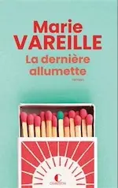
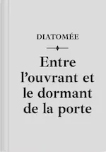
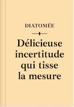

2025
Août


Juillet


Juin


Avril


Mars


Février


2024
Décembre
Juillet
- 31 —  💖 La dernière allumette de Marie Vareille
- 11 (édité) — 💖 Les Cosmiques de Diatomée
Juin


Avril
-
20 —
 À son image de Jérôme Ferrari
À son image de Jérôme Ferrari
-
06 —
 À la lumière du petit matin d’Agnès Martin-Lugand
À la lumière du petit matin d’Agnès Martin-Lugand
-
06 —
 Gen-X de Diatomée
Gen-X de Diatomée
Janvier

2023
Novembre
- 19 — La nostalgie de l’Ange d’Alice Sebold
- 19 (édité) — 💖 Pour un garçon de Nick Hornby
-
04 —
Nouvelles de Diatomée
Entre l’ouvrant et le dormant de la porte, Délicieuse incertitude qui tisse la mesure, Recueil de courts textes
- 04 — 💖 Les Cosmiques de Diatomée